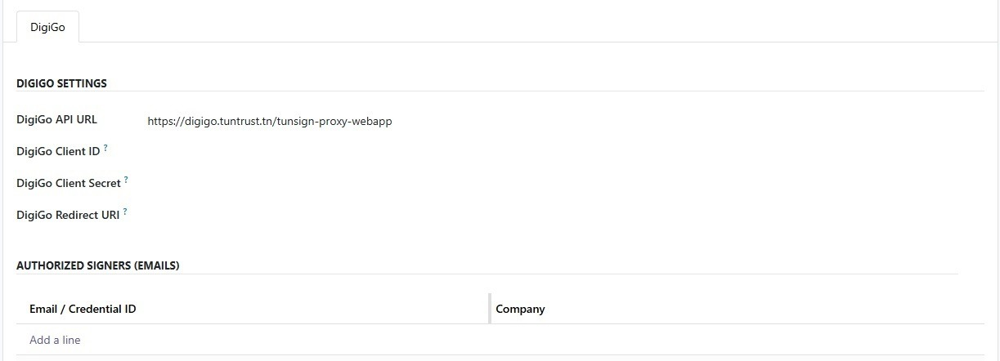

This addon extends Elfatoora TTN - Base with the DigiGo signature provider: OAuth2 authorization URL, authorization-code exchange, and API calls required to complete signing from the Elfatoora wizards. It does not replace the base module — you must install digiit_elfatoora_ttn_base first.
Developed by Digi-ERP
With this module installed, Elfatoora settings include DigiGo parameters: API URL, client id and secret, redirect URI, and related options for the OAuth and signing flow.
The redirect URI must match what you registered with DigiGo and must be reachable from the user’s browser.

1. Install digiit_elfatoora_ttn_base and complete Elfatoora platform settings.
2. Install digiit_elfatoora_ttn_digigo.
3. Open Elfatoora settings again and fill DigiGo parameters (API URL, client id, client secret, redirect URI).
4. Run an end-to-end test on a copy of your database before production.
Odoo 19.0
For any support, contact us:
contact@digi-it.com.tn